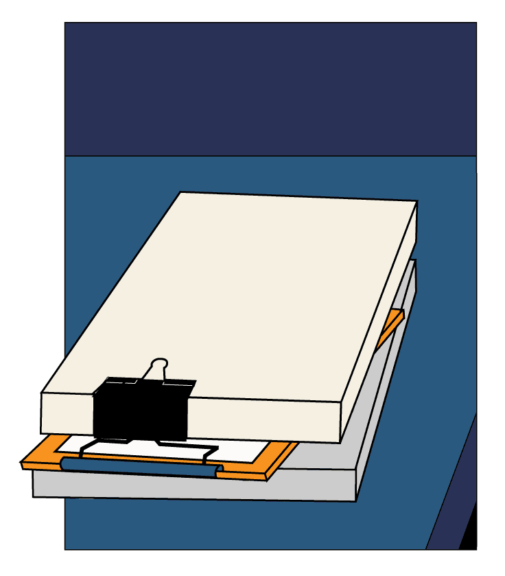
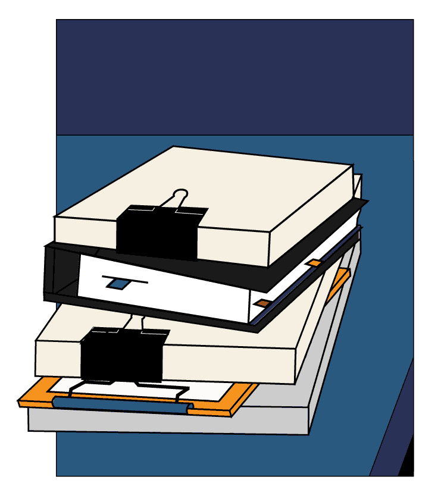
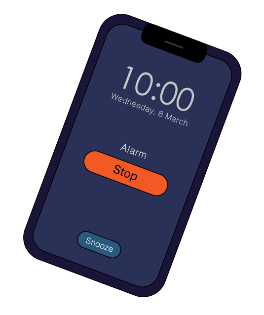
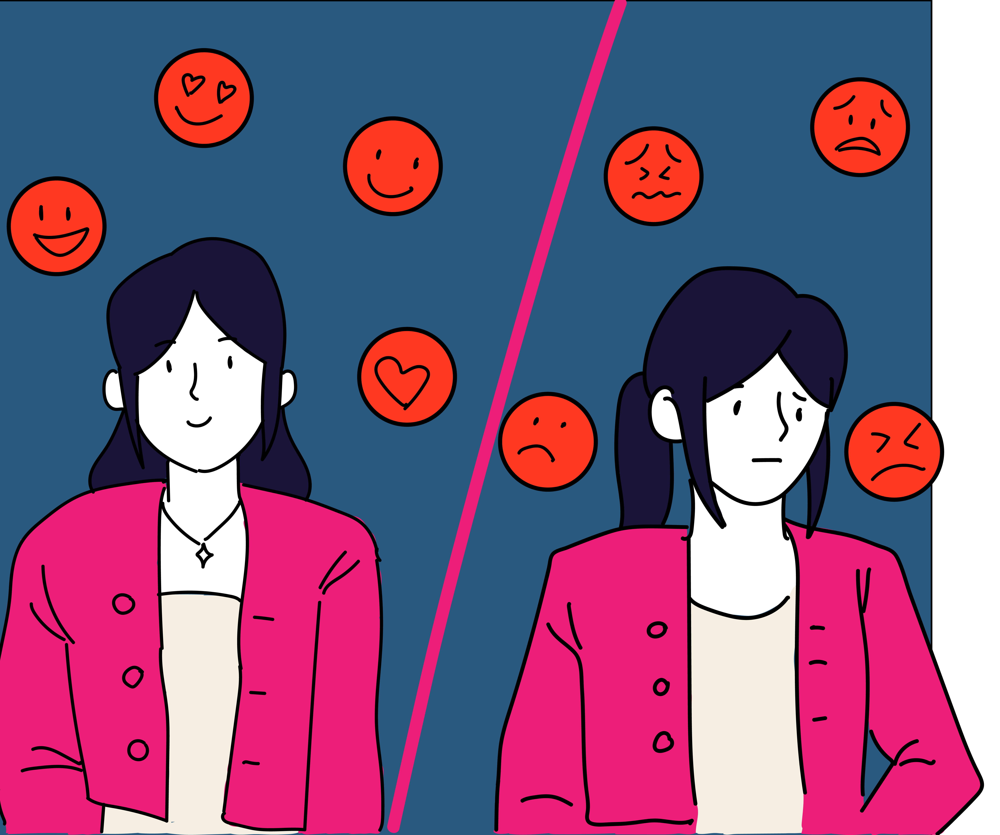

ฉันทำงานที่นี่มา 5 ปีแล้ว
คุณหัวหน้าหญิง ฝากสอนงานน้องผู้หญิงด้วยนะ
งานเก่าที่ทำไหร่
ก็ไม่หมดซักที

งานเก่าที่ทำไหร่
ก็ไม่หมดซักที

งานเก่าที่ทำไหร่
ก็ไม่หมดซักที
งานเก่าที่ทำไหร่
ก็ไม่หมดซักที
ไหนจะต้องทำ OT
จนไม่มีเวลาพักผ่อน
แต่ตำแหน่งของฉันก็ยังอยู่ที่เดิม

Today, 10.30 AM
Presentation 👓🤮
วันนี้ฉันจะต้องนำเสนองาน
แข่งกับหัวหน้าทีมชาย
ถ้าทำได้สำเร็จ
ฉันคงมีผลงานเป็นตัวช่วย
ให้เลื่อนตำแหน่งได้
สวัสดีครับ ผมขอเริ่มด้วยข้อมูลที่มาของโปรเจคนี้คร่าว ๆ ก่อนนะครับ
ในส่วนของดิฉันนะคะ ดิฉันขอขยายความ เกี่ยวกับโปรเจคที่ดิฉันไปคิดและค้นคว้ามานะคะ
พวกผู้หญิงชอบใช้อารมณ์
ในการทำงาน ไม่มีตรรกะ
ถ้าหากทำงานผิดพลาดขึ้นมา
ก็ซวยกันหมดพอดี
คุณคิดว่าคุณจะไหวมั้ย ?
คุณหัวหน้าทีมชายมีประสบการณ์มากกว่าคุณนะ
แล้วคุณคิดว่างานของคุณดีกว่า
หัวหน้าทีมชายตรงไหนหรอ ?
เหรอ งั้นผมขอเวลาตัดสินใจสักครู่
ไม่รู้ทำไม
ฉันถึงโดนตั้งคำถามมากมายขนาดนั้น
ฉันเพียงหวังว่าฉันจะได้รับโอกาสนั้นบ้าง
ยินดีด้วยนะครับ
หัวหน้าแผนกคนใหม่ของพวกเรา
แต่สุดท้าย
เขาก็เลือก 'ผู้ชาย'
เหมือนเดิม 'ทุกครั้ง'
ไม่ว่าฉันจะพยายามมากแค่ไหนก็ตาม
'อคติ'
ที่ผู้หญิงอาจะเจอในที่ทำงาน

คนอาจชอบผู้ชายที่หนักแน่น และชอบผู้หญิงที่อ่อนหวาน พอเจอผู้หญิงที่หนักแน่น คนอาจชอบผู้หญิงคนนั้นน้อยลง
สำหรับงานบางประเภท คนอาจประเมินความสามารถของผู้ชายสูงเกินไปและผู้หญิงต่ำเกินไปส่งผลต่อการสมัครงาน
จากอคติว่าผู้หญิงไม่เก่งเท่าผู้ชาย ดังนั้นเมื่อผู้หญิงทำงานสำเร็จเลยมีโอกาสโดนเพิกเฉยไม่เห็นคุณค่าและโดนต่อว่ามากขึ้นเมื่อทำผิด
ผู้หญิงที่มีลูกอาจถูกมองว่าไม่พร้อมทุ่มเทกับการทำงานและไม่ได้รับโอกาสในการทำงานที่ท้าทาย
คนอาจชอบเพื่อนร่วมงานที่คล้ายตัวเอง ไม่ว่าด้านเพศภาพลักษณ์ นิสัย หรือภูมิหลังและหลีกเลี่ยงคนที่ต่างจากตัวเอง
ความแตกต่างด้านเชื้อชาติ ศาสนา รสนิยมทางเพศ หรือความพิการ อาจขัดขวางความสำเร็จของผู้หญิงยิ่งขึ้นไปอีก
ความเชื่อและอคติที่มีต่อผู้หญิงนั้น ในปัจจุบันยังคงมีหลงเหลือให้เราได้เห็นกันอยู่ ทำให้ผู้หญิงต้องต่อสู้รับมือกับเหตุการณ์สองมาตรฐานในที่ทำงาน
แล้วเราจะช่วยกันลดอคติที่เกิดขึ้นได้อย่างไร ?
นอกจากเราจะทำความเข้าใจต่อความอคตินี้แล้วช่วยให้สิ่งนี้น้อยลงแล้ว เราสามารถเริ่มได้จากการสังเกตตัวเองก่อนว่าเรามีอคติเหล่านี้หรือไม่ แล้วจึงบอกต่อคนรอบข้าง
อคติเหล่านี้สามารถเกิดได้กับทุกเพศและเป็นปัญหากับทุกเพศเช่นเดียวกัน การช่วยกันแก้ปัญหาลดอคติในที่ทำงานจึงเป็นเรื่องของทุกคน
หากเราทุกคนช่วยกัน ปัญหาเหล่านี้คงบรรเทาและลดลงได้ง่ายขึ้นเพื่อเราทุกคนเอง